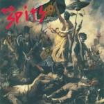
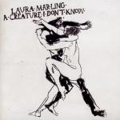

Music Reviews
-

The Spits The Spits V
Album number five by the Spits is business as usual - more flippant, grubby punk anthems from a band that doesn't see any good reason to deviate the formula.
Juan Edgardo Rodríguez sees himself growing old to this... -
A Classic Education Call it Blazing
The Bologna, Italy-based band releases a retro styled, pseudo-psychadelic LP that strikes very familiar chords. You can Call it Blazing, but can you call it good?
Ben Jones is on fire... -
Serge Gainsbourg Histoire de Melody Nelson
Having already covered such diverse territory as chanson, jazz, and pop, 1971's Histoire de Melody Nelson saw Serge Gainsbourg turn his attention to orchestral rock with stunning results.
David Coleman reflects on a true classic... -
Teebs Collections 01
The sweet fragrances of Teebs' new album are alluring.
Michael Iovino reviews... -
Magazine No Thyself
Yes, Howard, of course: Howard Devoto and Magazine return after thirty years.
Sean Caldwell reviews... -
The Black Keys El Camino
The Black Keys' seventh album plunders rock's history. It's raw, driving, back to basics says the band. It is that. But is it any good?
David John Wood -
65daysofstatic We Were Exploding Anyway/Heavy Sky
More than a year after it was first released, We Were Exploding Anyway, the fourth album from Sheffield noise merchants 65daysofstatic, has finally been given a proper international release. And it now comes with an extra EP thrown in, which is, whatever way you look at it, a lot of bonkers techno-infused post-rock to get your head around.
In fact, Mark Davison still hasn't quite got his head round it all... -
The Moth & The Mirror Honestly, This World
The Scottish sextet's debut release may feature a number of well-renowned players, but their joint effort should not be looked upon as a casual collaboration.
Juan Edgardo Rodríguez likes the calm and the storm... -
Okkervil River I Am Very Far
Okkervil River steps far from their familiar sound with their aptly titled sixth LP. The real question: Was it a misstep?
Forrest Cardamenis ponders... -

Laura Marling A Creature I Don't Know
Laura Marling might well have already been on the map, but with this her third record she shoved a grappling hook, her crampons and a couple of ice picks into it. She's not going anywhere it would seem.
Joe Iliff reviews...